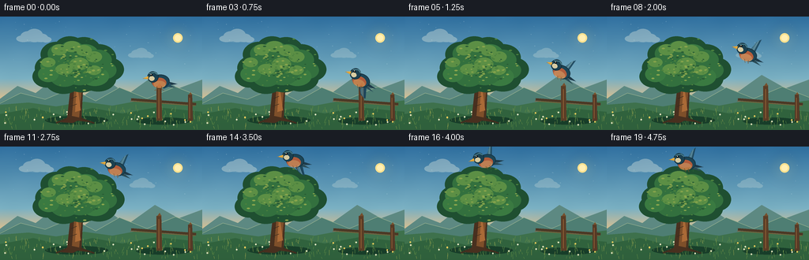
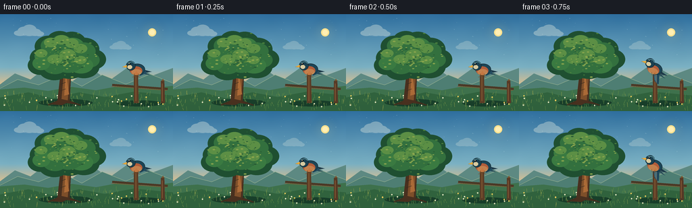
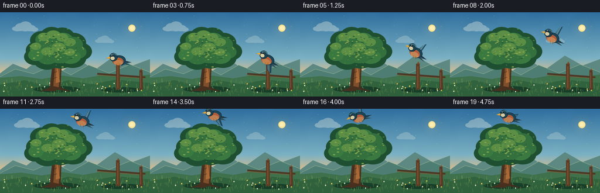

CODING AGENTS AS PIXEL WORLD MODELS
traex/GPT-5.6-Sol · dynamic_spatial_relationship_0049
点击播放 · 原生 RGB 像素
逐轮保存的候选
回放视频、检查图与代码变化。
每份候选均可单独播放。实际图片检查记录在下方工具轨迹中。
候选 01播放与检查图
点击播放 · 原生 RGB 像素


展开代码变化
--- 上一保存版本
+++ 本次保存版本
@@ -0,0 +1,337 @@
+from pathlib import Path
+import math
+import numpy as np
+from PIL import Image, ImageDraw, ImageFilter
+import artifact_io
+
+# Procedural 2-D animation. Everything is rendered at 4x resolution and
+# downsampled for clean silhouettes and detailed, soft-edged scenery.
+W, H, N, SS = 256, 144, 20, 4
+RW, RH = W * SS, H * SS
+ROOT = Path(__file__).resolve().parent
+rng = np.random.default_rng(8049)
+
+
+def sc(v):
+ return int(round(v * SS))
+
+
+def pts(seq):
+ return [(sc(x), sc(y)) for x, y in seq]
+
+
+def ellipse(draw, box, fill, outline=None, width=1):
+ draw.ellipse(tuple(sc(v) for v in box), fill=fill, outline=outline, width=sc(width) if outline else 1)
+
+
+def line(draw, xy, fill, width=1):
+ draw.line(pts(xy), fill=fill, width=max(1, sc(width)), joint="curve")
+
+
+def polygon(draw, xy, fill):
+ draw.polygon(pts(xy), fill=fill)
+
+
+# Stable natural details, shared by all frames.
+stars = [(rng.uniform(5, 250), rng.uniform(5, 61), rng.uniform(.15, .55)) for _ in range(38)]
+leaf_specks = [(rng.normal(0, 21), rng.normal(0, 14), rng.uniform(.7, 1.7), rng.random()) for _ in range(135)]
+grass = [(rng.uniform(0, 256), rng.uniform(118, 143), rng.uniform(2, 7), rng.uniform(-1.2, 1.2)) for _ in range(180)]
+flowers = [(rng.uniform(4, 251), rng.uniform(123, 141), rng.choice([0, 0, 0, 1])) for _ in range(28)]
+
+
+def sky_base(frame):
+ """Dawn gradient with a warm horizon and subtle film-like texture."""
+ y = np.arange(RH, dtype=np.float32)[:, None]
+ top = np.array([47, 111, 159], np.float32)
+ mid = np.array([123, 177, 195], np.float32)
+ low = np.array([242, 194, 129], np.float32)
+ u = np.clip(y / sc(112), 0, 1)
+ a = np.clip(u / .70, 0, 1)
+ b = np.clip((u - .70) / .30, 0, 1)
+ col = top[None, None, :] * (1-a[..., None]) + mid[None, None, :] * a[..., None]
+ col = col * (1-b[..., None]) + low[None, None, :] * b[..., None]
+ arr = np.broadcast_to(col, (RH, RW, 3)).copy()
+ # Barely visible deterministic texture avoids sterile flat gradients.
+ xx = np.arange(RW, dtype=np.float32)[None, :]
+ texture = .9*np.sin(xx*.017 + y*.031) + .45*np.sin(xx*.041-y*.013)
+ arr += texture[..., None]
+ return Image.fromarray(np.uint8(np.clip(arr, 0, 255)), "RGB")
+
+
+def draw_cloud(layer, cx, cy, scale, alpha=115):
+ d = ImageDraw.Draw(layer, "RGBA")
+ color = (244, 245, 229, alpha)
+ shade = (212, 226, 220, int(alpha*.38))
+ ellipse(d, (cx-24*scale, cy-3*scale, cx+27*scale, cy+8*scale), shade)
+ for ox, oy, rx, ry in [(-19,0,15,7),(-9,-5,16,11),(4,-7,18,14),(18,-2,15,9),(29,2,11,6)]:
+ ellipse(d, (cx+(ox-rx)*scale, cy+(oy-ry)*scale,
+ cx+(ox+rx)*scale, cy+(oy+ry)*scale), color)
+
+
+def render_background(frame):
+ im = sky_base(frame)
+ d = ImageDraw.Draw(im, "RGBA")
+
+ # Tiny high-sky glints and warm sun disk.
+ for x, y, r in stars:
+ ellipse(d, (x-r, y-r, x+r, y+r), (220, 240, 239, 55))
+ glow = Image.new("RGBA", (RW, RH), (0,0,0,0))
+ gd = ImageDraw.Draw(glow, "RGBA")
+ for rad, a in [(18,10),(13,14),(9,20)]:
+ ellipse(gd, (225-rad, 27-rad, 225+rad, 27+rad), (255,220,130,a))
+ glow = glow.filter(ImageFilter.GaussianBlur(sc(6)))
+ im = Image.alpha_composite(im.convert("RGBA"), glow)
+ d = ImageDraw.Draw(im, "RGBA")
+ ellipse(d, (219,21,231,33), (255,225,143,225))
+ ellipse(d, (221,23,229,31), (255,239,180,170))
+
+ clouds = Image.new("RGBA", (RW, RH), (0,0,0,0))
+ drift = frame * .28
+ draw_cloud(clouds, 41+drift, 28, .60, 85)
+ draw_cloud(clouds, 177+drift*.55, 49, .44, 56)
+ im = Image.alpha_composite(im, clouds)
+ d = ImageDraw.Draw(im, "RGBA")
+
+ # Layered distant hills create depth.
+ polygon(d, [(-5,108),(22,88),(45,97),(71,77),(104,102),(134,80),(161,99),(196,74),(226,91),(261,78),(261,145),(-5,145)], (93,137,130,255))
+ polygon(d, [(-5,111),(26,97),(57,105),(90,91),(121,107),(151,90),(186,104),(222,89),(261,104),(261,145),(-5,145)], (78,126,115,255))
+ # Atmospheric highlight along hilltops.
+ line(d, [(-2,111),(26,97),(57,105),(90,91),(121,107),(151,90),(186,104),(222,89),(260,104)], (154,179,145,100), .7)
+
+ # Meadow layers.
+ polygon(d, [(-2,112),(36,109),(71,114),(106,108),(142,113),(180,106),(218,111),(258,106),(258,146),(-2,146)], (62,113,76,255))
+ polygon(d, [(-2,124),(42,116),(78,125),(117,116),(155,123),(198,115),(258,121),(258,146),(-2,146)], (48,98,61,255))
+
+ # Soft elongated ground shadows.
+ ellipse(d, (57,126,137,137), (24,63,42,88))
+ ellipse(d, (172,128,241,137), (24,63,42,60))
+
+ # Grass texture (subtle sway).
+ for i, (x, y0, hh, lean) in enumerate(grass):
+ sway = math.sin(frame*.18 + i*.71) * .35
+ col = (95,139,70,170) if i % 3 else (138,155,76,145)
+ line(d, [(x,y0),(x+lean+sway,y0-hh)], col, .45)
+ for x, y0, kind in flowers:
+ stem = (71,119,66,170)
+ line(d, [(x,y0),(x-.3,y0-2.7)], stem, .4)
+ c = (245,205,91,195) if kind else (230,231,193,170)
+ ellipse(d, (x-1.0,y0-4,x+1,y0-2), c)
+ return im
+
+
+def draw_fence(d):
+ # A small rustic fence establishes the bird's initial perch to the right.
+ # It is kept visually subordinate to the tree.
+ line(d, [(166,105),(248,111)], (76,56,37,255), 3.3)
+ line(d, [(165,107),(247,113)], (132,94,54,255), 1.1)
+ polygon(d, [(198,88),(204,87),(205,132),(198,132)], (91,61,38,255))
+ polygon(d, [(199,88),(202,84),(204,88)], (117,79,44,255))
+ line(d, [(201,92),(201,129)], (157,106,58,150), .75)
+ polygon(d, [(238,99),(243,99),(244,132),(238,132)], (86,58,38,255))
+ polygon(d, [(239,99),(241,96),(243,99)], (119,80,45,255))
+ line(d, [(240,103),(240,129)], (151,102,58,120), .65)
+
+
+def draw_tree(im, frame):
+ d = ImageDraw.Draw(im, "RGBA")
+ sway = math.sin(frame*.17)*.45
+ # Trunk silhouette and broad roots.
+ polygon(d, [(85,128),(89,92),(88,72),(94,53),(100,55),(100,75),(105,90),(103,128),
+ (114,134),(98,132),(92,135),(75,134)], (73,48,31,255))
+ polygon(d, [(91,126),(94,91),(93,62),(98,57),(99,82),(103,95),(100,128)], (126,79,42,255))
+ polygon(d, [(95,121),(97,89),(97,64),(100,60),(99,97),(102,119)], (170,106,55,145))
+ # Branches visible through leaf gaps.
+ line(d, [(94,85),(77,64),(66,58)], (81,50,31,255), 4)
+ line(d, [(96,76),(111,57),(124,50)], (85,52,30,255), 4)
+ line(d, [(98,93),(120,73),(139,69)], (88,53,31,255), 3.3)
+ line(d, [(93,74),(90,52),(82,43)], (94,56,32,255), 3)
+ line(d, [(94,83),(72,75),(58,76)], (87,52,31,255), 2.7)
+
+ # Canopy constructed in three depth layers, with mild natural sway.
+ clusters = [
+ (62,65,18,15),(71,48,20,16),(88,41,20,16),(106,44,22,18),
+ (125,52,22,17),(138,67,19,15),(124,78,23,17),(103,76,26,20),
+ (80,80,24,18),(59,76,18,14),(92,58,29,22),(115,62,28,20)]
+ for i,(cx,cy,rx,ry) in enumerate(clusters):
+ dx = sway * (0.35 + (cy-35)/60) + math.sin(frame*.14+i)*.20
+ # dark rim
+ ellipse(d, (cx-rx+dx,cy-ry,cx+rx+dx,cy+ry), (31,79,49,255))
+ inner = [
+ (65,62,14,11),(75,47,15,12),(91,43,16,12),(108,48,17,13),
+ (124,55,17,13),(133,68,14,11),(120,76,18,12),(101,72,21,15),
+ (81,76,18,13),(61,73,13,10),(91,57,22,16),(113,62,21,14)]
+ for i,(cx,cy,rx,ry) in enumerate(inner):
+ dx = sway + math.sin(i*1.7)*.3
+ col = (51,112,62,255) if i%3 else (58,122,65,255)
+ ellipse(d, (cx-rx+dx,cy-ry,cx+rx+dx,cy+ry), col)
+ # Upper light patches, implying warm side-light.
+ highlights = [(61,58,9,6),(75,42,10,7),(91,38,11,7),(106,43,10,7),
+ (119,51,10,7),(81,67,11,7),(100,60,12,8),(119,68,9,6)]
+ for i,(cx,cy,rx,ry) in enumerate(highlights):
+ ellipse(d, (cx-rx+sway,cy-ry,cx+rx+sway,cy+ry), (92,143,69,170))
+ # Hundreds of tiny leaf marks add texture without visual noise.
+ for i,(ox,oy,r,t) in enumerate(leaf_specks):
+ cx, cy = 98+ox+sway, 61+oy
+ # Keep marks in an organic oval and shift their hue by side/height.
+ if ((ox/49)**2 + (oy/35)**2) < 1:
+ col = (137,165,77,150) if t>.65 else ((40,91,52,165) if t<.25 else (76,129,62,145))
+ ellipse(d, (cx-r*1.25,cy-r*.55,cx+r*1.25,cy+r*.55), col)
+ # A few trunk marks and roots in the foreground.
+ line(d, [(90,104),(97,101)], (51,40,29,130), .8)
+ line(d, [(89,114),(97,111)], (56,41,28,140), .8)
+ line(d, [(83,130),(71,135)], (65,48,31,220), 2)
+ line(d, [(102,129),(119,135)], (65,46,30,220), 2)
+
+
+def ease(t):
+ return t*t*(3-2*t)
+
+
+def bird_state(frame):
+ # 0-2: perched to the right; 3: takeoff anticipation; 4-17: rising arc;
+ # 18-19: stable hover above the tree.
+ if frame <= 2:
+ return (201.5, 80.5 - .35*math.sin(frame*1.6), 0.0, "perched", 0.0, 0.0)
+ if frame == 3:
+ return (200.0, 79.0, 0.0, "launch", -1.5, -1.5)
+ if frame <= 17:
+ t = (frame-3)/14.0
+ u = ease(t)
+ # Quadratic arc: unmistakably leftward and upward, settling over crown.
+ x = (1-u)*200 + u*99 + 8*math.sin(math.pi*t)
+ y = (1-u)*79 + u*20 - 17*math.sin(math.pi*t)
+ # finite-ish velocity used for body attitude and motion streaks
+ t0 = max(0, t-.03); t1 = min(1, t+.03)
+ u0, u1 = ease(t0), ease(t1)
+ x0=(1-u0)*200+u0*99+8*math.sin(math.pi*t0)
+ x1=(1-u1)*200+u1*99+8*math.sin(math.pi*t1)
+ y0=(1-u0)*79+u0*20-17*math.sin(math.pi*t0)
+ y1=(1-u1)*79+u1*20-17*math.sin(math.pi*t1)
+ return (x,y,0.0,"flight",x1-x0,y1-y0)
+ return (99 + .8*math.sin(frame*1.7), 20 + .5*math.sin(frame*1.3), 0.0, "hover", 0, 0)
+
+
+def make_bird(frame, mode, vx, vy):
+ """Create a crisp blue-and-russet songbird sprite facing left."""
+ SW, SH = sc(54), sc(50)
+ sp = Image.new("RGBA", (SW,SH), (0,0,0,0))
+ d = ImageDraw.Draw(sp, "RGBA")
+ # Coordinates in output pixels relative to sprite center.
+ ox, oy = 27, 25
+ def P(poly): return [(sc(ox+x),sc(oy+y)) for x,y in poly]
+ def E(box, fill, outline=None, width=1):
+ x0,y0,x1,y1=box
+ d.ellipse((sc(ox+x0),sc(oy+y0),sc(ox+x1),sc(oy+y1)), fill=fill, outline=outline, width=sc(width) if outline else 1)
+
+ flying = mode != "perched"
+ phase = math.sin(frame*1.72 + .5)
+ if mode == "launch": phase = -1
+ if mode == "hover": phase = math.sin(frame*2.0)
+
+ # Tail behind the body, separated feathers.
+ d.polygon(P([(8,1),(23,5),(10,7)]), fill=(30,58,73,255))
+ d.polygon(P([(7,3),(21,10),(8,8)]), fill=(42,75,86,255))
+ d.line(P([(10,5),(20,7)]), fill=(128,153,142,130), width=sc(.45))
+
+ # Rear wing first. Dynamic flap is deliberately large enough to read.
+ if flying:
+ if phase >= 0:
+ tipy = -18 - 4*phase
+ wing = [(4,1),(9,-4),(12,tipy),(7,tipy+5),(2,-4),(-2,2)]
+ d.polygon(P(wing), fill=(31,73,95,245))
+ d.polygon(P([(7,-3),(10,tipy+1),(6,tipy+7),(2,-1)]), fill=(72,119,134,230))
+ d.line(P([(5,-2),(9,tipy+3)]), fill=(167,190,177,125), width=sc(.55))
+ else:
+ tipy = 17 + 5*(-phase)
+ wing = [(3,0),(10,4),(15,tipy),(8,tipy-3),(0,7),(-2,2)]
+ d.polygon(P(wing), fill=(28,68,90,245))
+ d.polygon(P([(6,5),(12,tipy-1),(7,tipy-5),(1,5)]), fill=(70,116,132,225))
+ d.line(P([(6,6),(11,tipy-2)]), fill=(164,188,178,115), width=sc(.55))
+ else:
+ # Neatly folded wing while perched.
+ d.polygon(P([(-1,-3),(11,-1),(15,7),(6,11),(-4,4)]), fill=(35,78,99,255))
+ d.polygon(P([(0,-1),(10,1),(6,7),(-3,3)]), fill=(78,124,137,230))
+ d.line(P([(0,2),(9,4)]), fill=(179,194,173,130), width=sc(.55))
+
+ # Body, belly, and head. A dark edge improves separation from sky.
+ E((-10,-7,13,10), (28,69,86,255), (20,46,58,255), .7)
+ E((-9,-3,9,10), (181,91,55,245))
+ E((-7,1,8,10), (210,126,70,220))
+ E((-15,-11,-1,3), (27,64,80,255), (18,42,53,255), .65)
+ # cheek, brow, eye
+ E((-13,-5,-6,1), (221,205,161,245))
+ d.line(P([(-13,-8),(-6,-10),(-2,-7)]), fill=(76,128,137,215), width=sc(1.2))
+ E((-11.6,-7.9,-8.7,-5.0), (9,15,17,255))
+ E((-11.0,-7.5,-10.1,-6.6), (245,248,226,255))
+ # Small bright beak points left.
+ d.polygon(P([(-14,-5),(-21,-2),(-14,-1)]), fill=(240,173,57,255))
+ d.line(P([(-20.5,-2),(-14,-2.2)]), fill=(113,69,31,220), width=sc(.45))
+ # body highlight and breast detail
+ d.arc((sc(ox-7),sc(oy-1),sc(ox+8),sc(oy+10)), 20, 135, fill=(241,171,91,150), width=sc(.7))
+
+ if mode == "perched":
+ # feet gripping the post cap
+ d.line(P([(-3,8),(-3,12),(-6,13)]), fill=(119,77,42,255), width=sc(.8))
+ d.line(P([(3,8),(3,12),(6,13)]), fill=(119,77,42,255), width=sc(.8))
+ else:
+ d.line(P([(-1,8),(1,12)]), fill=(122,76,41,220), width=sc(.75))
+ d.line(P([(4,8),(5,12)]), fill=(122,76,41,220), width=sc(.75))
+
+ # Nose aligns with trajectory. Keep the tilt restrained to preserve readability.
+ angle = 0
+ if mode in ("flight", "launch") and abs(vx)+abs(vy)>0:
+ # Sprite points left. Upward motion gives a visually upward-pointing beak.
+ slope = math.degrees(math.atan2(-vy, max(0.01,-vx)))
+ angle = -max(-20, min(24, slope*.45))
+ if mode == "hover": angle = -3
+ if angle:
+ sp = sp.rotate(angle, resample=Image.Resampling.BICUBIC, expand=False)
+ return sp
+
+
+def draw_bird(im, frame):
+ x,y,_,mode,vx,vy = bird_state(frame)
+ # A restrained translucent wake on the fastest middle frames communicates flight.
+ if mode == "flight" and 6 <= frame <= 13:
+ wake = Image.new("RGBA", (RW,RH), (0,0,0,0))
+ wd = ImageDraw.Draw(wake, "RGBA")
+ speed = math.hypot(vx,vy)
+ if speed > .4:
+ ux,uy = -vx/speed,-vy/speed
+ for k,a in [(1,34),(2,18)]:
+ cx=x+ux*k*4; cy=y+uy*k*4
+ ellipse(wd,(cx-8,cy-2,cx+7,cy+2),(206,227,220,a))
+ wake = wake.filter(ImageFilter.GaussianBlur(sc(1.8)))
+ im.alpha_composite(wake)
+ sp = make_bird(frame,mode,vx,vy)
+ im.alpha_composite(sp, (sc(x)-sp.width//2, sc(y)-sp.height//2))
+
+
+def render(frame):
+ im = render_background(frame)
+ d = ImageDraw.Draw(im, "RGBA")
+ draw_fence(d)
+ draw_tree(im, frame)
+ draw_bird(im, frame)
+ # Gentle foreground vignette focuses the action without crushing colors.
+ vign = Image.new("RGBA",(RW,RH),(0,0,0,0))
+ vd=ImageDraw.Draw(vign,"RGBA")
+ vd.rectangle((0,0,RW,RH), fill=(0,0,0,0))
+ # Bottom haze for depth.
+ grad=np.zeros((RH,RW,4),dtype=np.uint8)
+ for yy in range(sc(126),RH):
+ a=int(14*(yy-sc(126))/max(1,RH-sc(126)))
+ grad[yy,:,0:3]=(17,42,28); grad[yy,:,3]=a
+ im=Image.alpha_composite(im,Image.fromarray(grad,"RGBA"))
+ return np.asarray(im.convert("RGB").resize((W,H),Image.Resampling.LANCZOS),dtype=np.uint8)
+
+
+def main():
+ frames=np.stack([render(i) for i in range(N)],axis=0)
+ assert frames.shape==(20,144,256,3) and frames.dtype==np.uint8
+ artifact_io.save(frames,ROOT)
+ print("saved",frames.shape,frames.dtype,"range",int(frames.min()),int(frames.max()))
+
+
+if __name__ == "__main__":
+ main()
候选 02播放与检查图
点击播放 · 原生 RGB 像素

展开代码变化
--- 上一保存版本
+++ 本次保存版本
@@ -194,21 +194,21 @@
return (201.5, 80.5 - .35*math.sin(frame*1.6), 0.0, "perched", 0.0, 0.0)
if frame == 3:
return (200.0, 79.0, 0.0, "launch", -1.5, -1.5)
- if frame <= 17:
- t = (frame-3)/14.0
+ if frame <= 16:
+ t = (frame-3)/13.0
u = ease(t)
# Quadratic arc: unmistakably leftward and upward, settling over crown.
x = (1-u)*200 + u*99 + 8*math.sin(math.pi*t)
- y = (1-u)*79 + u*20 - 17*math.sin(math.pi*t)
+ y = (1-u)*79 + u*13.5 - 17*math.sin(math.pi*t)
# finite-ish velocity used for body attitude and motion streaks
t0 = max(0, t-.03); t1 = min(1, t+.03)
u0, u1 = ease(t0), ease(t1)
x0=(1-u0)*200+u0*99+8*math.sin(math.pi*t0)
x1=(1-u1)*200+u1*99+8*math.sin(math.pi*t1)
- y0=(1-u0)*79+u0*20-17*math.sin(math.pi*t0)
- y1=(1-u1)*79+u1*20-17*math.sin(math.pi*t1)
+ y0=(1-u0)*79+u0*13.5-17*math.sin(math.pi*t0)
+ y1=(1-u1)*79+u1*13.5-17*math.sin(math.pi*t1)
return (x,y,0.0,"flight",x1-x0,y1-y0)
- return (99 + .8*math.sin(frame*1.7), 20 + .5*math.sin(frame*1.3), 0.0, "hover", 0, 0)
+ return (99 + .8*math.sin(frame*1.7), 13.5 + .35*math.sin(frame*1.3), 0.0, "hover", 0, 0)
def make_bird(frame, mode, vx, vy):
@@ -234,7 +234,15 @@
d.line(P([(10,5),(20,7)]), fill=(128,153,142,130), width=sc(.45))
# Rear wing first. Dynamic flap is deliberately large enough to read.
- if flying:
+ if mode == "hover":
+ # Compact, almost horizontal hover stroke: the full bird remains above
+ # the crown and inside the frame while the changing tip angle stays alive.
+ tip = -2 + phase * 2.0
+ wing = [(2,1),(7,-4),(17,tip-4),(14,tip+1),(7,2),(-1,4)]
+ d.polygon(P(wing), fill=(31,73,95,245))
+ d.polygon(P([(6,-2),(15,tip-2),(12,tip+1),(4,2)]), fill=(76,122,136,225))
+ d.line(P([(6,0),(14,tip)]), fill=(167,190,177,125), width=sc(.55))
+ elif flying:
if phase >= 0:
tipy = -18 - 4*phase
wing = [(4,1),(9,-4),(12,tipy),(7,tipy+5),(2,-4),(-2,2)]
可观测工具轨迹
实际执行的命令与返回图片。
命令 1exit 0
/bin/bash -lc "cat prompt.txt && printf '\\n--- GENERATION_RULES.md ---\\n' && cat GENERATION_RULES.md && printf '\\n--- task_spec.json ---\\n' && cat task_spec.json"
命令 2exit 0
/bin/bash -lc "find . -maxdepth 2 -type f -printf '%p\\n' | sort && printf '\\n--- tools ---\\n' && command -v ffmpeg || true && command -v python3 || true"
命令 3exit 0
/bin/bash -lc "cat artifact_io.py && python3 - <<'PY'
try:
import PIL; print('PIL', PIL.__version__)
except Exception as e: print('no PIL',e)
try:
import numpy; print('numpy', numpy.__version__)
except Exception as e: print('no numpy',e)
PY"命令 4exit 0
/bin/bash -lc "cat > generate.py <<'PY'
from pathlib import Path
import math
import numpy as np
from PIL import Image, ImageDraw, ImageFilter
import artifact_io
# Procedural 2-D animation. Everything is rendered at 4x resolution and
# downsampled for clean silhouettes and detailed, soft-edged scenery.
W, H, N, SS = 256, 144, 20, 4
RW, RH = W * SS, H * SS
ROOT = Path(__file__).resolve().parent
rng = np.random.default_rng(8049)
def sc(v):
return int(round(v * SS))
def pts(seq):
return [(sc(x), sc(y)) for x, y in seq]
def ellipse(draw, box, fill, outline=None, width=1):
draw.ellipse(tuple(sc(v) for v in box), fill=fill, outline=outline, width=sc(width) if outline else 1)
def line(draw, xy, fill, width=1):
draw.line(pts(xy), fill=fill, width=max(1, sc(width)), joint=\"curve\")
def polygon(draw, xy, fill):
draw.polygon(pts(xy), fill=fill)
# Stable natural details, shared by all frames.
stars = [(rng.uniform(5, 250), rng.uniform(5, 61), rng.uniform(.15, .55)) for _ in range(38)]
leaf_specks = [(rng.normal(0, 21), rng.normal(0, 14), rng.uniform(.7, 1.7), rng.random()) for _ in range(135)]
grass = [(rng.uniform(0, 256), rng.uniform(118, 143), rng.uniform(2, 7), rng.uniform(-1.2, 1.2)) for _ in range(180)]
flowers = [(rng.uniform(4, 251), rng.uniform(123, 141), rng.choice([0, 0, 0, 1])) for _ in range(28)]
def sky_base(frame):
\"\"\"Dawn gradient with a warm horizon and subtle film-like texture.\"\"\"
y = np.arange(RH, dtype=np.float32)[:, None]
top = np.array([47, 111, 159], np.float32)
mid = np.array([123, 177, 195], np.float32)
low = np.array([242, 194, 129], np.float32)
u = np.clip(y / sc(112), 0, 1)
a = np.clip(u / .70, 0, 1)
b = np.clip((u - .70) / .30, 0, 1)
col = top[None, None, :] * (1-a[..., None]) + mid[None, None, :] * a[..., None]
col = col * (1-b[..., None]) + low[None, None, :] * b[..., None]
arr = np.broadcast_to(col, (RH, RW, 3)).copy()
# Barely visible deterministic texture avoids sterile flat gradients.
xx = np.arange(RW, dtype=np.float32)[None, :]
texture = .9*np.sin(xx*.017 + y*.031) + .45*np.sin(xx*.041-y*.013)
arr += texture[..., None]
return Image.fromarray(np.uint8(np.clip(arr, 0, 255)), \"RGB\")
def draw_cloud(layer, cx, cy, scale, alpha=115):
d = ImageDraw.Draw(layer, \"RGBA\")
color = (244, 245, 229, alpha)
shade = (212, 226, 220, int(alpha*.38))
ellipse(d, (cx-24*scale, cy-3*scale, cx+27*scale, cy+8*scale), shade)
for ox, oy, rx, ry in [(-19,0,15,7),(-9,-5,16,11),(4,-7,18,14),(18,-2,15,9),(29,2,11,6)]:
ellipse(d, (cx+(ox-rx)*scale, cy+(oy-ry)*scale,
cx+(ox+rx)*scale, cy+(oy+ry)*scale), color)
def render_background(frame):
im = sky_base(frame)
d = ImageDraw.Draw(im, \"RGBA\")
# Tiny high-sky glints and warm sun disk.
for x, y, r in stars:
ellipse(d, (x-r, y-r, x+r, y+r), (220, 240, 239, 55))
glow = Image.new(\"RGBA\", (RW, RH), (0,0,0,0))
gd = ImageDraw.Draw(glow, \"RGBA\")
for rad, a in [(18,10),(13,14),(9,20)]:
ellipse(gd, (225-rad, 27-rad, 225+rad, 27+rad), (255,220,130,a))
glow = glow.filter(ImageFilter.GaussianBlur(sc(6)))
im = Image.alpha_composite(im.convert(\"RGBA\"), glow)
d = ImageDraw.Draw(im, \"RGBA\")
ellipse(d, (219,21,231,33), (255,225,143,225))
ellipse(d, (221,23,229,31), (255,239,180,170))
clouds = Image.new(\"RGBA\", (RW, RH), (0,0,0,0))
drift = frame * .28
draw_cloud(clouds, 41+drift, 28, .60, 85)
draw_cloud(clouds, 177+drift*.55, 49, .44, 56)
im = Image.alpha_composite(im, clouds)
d = ImageDraw.Draw(im, \"RGBA\")
# Layered distant hills create depth.
polygon(d, [(-5,108),(22,88),(45,97),(71,77),(104,102),(134,80),(161,99),(196,74),(226,91),(261,78),(261,145),(-5,145)], (93,137,130,255))
polygon(d, [(-5,111),(26,97),(57,105),(90,91),(121,107),(151,90),(186,104),(222,89),(261,104),(261,145),(-5,145)], (78,126,115,255))
# Atmospheric highlight along hilltops.
line(d, [(-2,111),(26,97),(57,105),(90,91),(121,107),(151,90),(186,104),(222,89),(260,104)], (154,179,145,100), .7)
# Meadow layers.
polygon(d, [(-2,112),(36,109),(71,114),(106,108),(142,113),(180,106),(218,111),(258,106),(258,146),(-2,146)], (62,113,76,255))
polygon(d, [(-2,124),(42,116),(78,125),(117,116),(155,123),(198,115),(258,121),(258,146),(-2,146)], (48,98,61,255))
# Soft elongated ground shadows.
ellipse(d, (57,126,137,137), (24,63,42,88))
ellipse(d, (172,128,241,137), (24,63,42,60))
# Grass texture (subtle sway).
for i, (x, y0, hh, lean) in enumerate(grass):
sway = math.sin(frame*.18 + i*.71) * .35
col = (95,139,70,170) if i % 3 else (138,155,76,145)
line(d, [(x,y0),(x+lean+sway,y0-hh)], col, .45)
for x, y0, kind in flowers:
stem = (71,119,66,170)
line(d, [(x,y0),(x-.3,y0-2.7)], stem, .4)
c = (245,205,91,195) if kind else (230,231,193,170)
ellipse(d, (x-1.0,y0-4,x+1,y0-2), c)
return im
def draw_fence(d):
# A small rustic fence establishes the bird's initial perch to the right.
# It is kept visually subordinate to the tree.
line(d, [(166,105),(248,111)], (76,56,37,255), 3.3)
line(d, [(165,107),(247,113)], (132,94,54,255), 1.1)
polygon(d, [(198,88),(204,87),(205,132),(198,132)], (91,61,38,255))
polygon(d, [(199,88),(202,84),(204,88)], (117,79,44,255))
line(d, [(201,92),(201,129)], (157,106,58,150), .75)
polygon(d, [(238,99),(243,99),(244,132),(238,132)], (86,58,38,255))
polygon(d, [(239,99),(241,96),(243,99)], (119,80,45,255))
line(d, [(240,103),(240,129)], (151,102,58,120), .65)
def draw_tree(im, frame):
d = ImageDraw.Draw(im, \"RGBA\")
sway = math.sin(frame*.17)*.45
# Trunk silhouette and broad roots.
polygon(d, [(85,128),(89,92),(88,72),(94,53),(100,55),(100,75),(105,90),(103,128),
(114,134),(98,132),(92,135),(75,134)], (73,48,31,255))
polygon(d, [(91,126),(94,91),(93,62),(98,57),(99,82),(103,95),(100,128)], (126,79,42,255))
polygon(d, [(95,121),(97,89),(97,64),(100,60),(99,97),(102,119)], (170,106,55,145))
# Branches visible through leaf gaps.
line(d, [(94,85),(77,64),(66,58)], (81,50,31,255), 4)
line(d, [(96,76),(111,57),(124,50)], (85,52,30,255), 4)
line(d, [(98,93),(120,73),(139,69)], (88,53,31,255), 3.3)
line(d, [(93,74),(90,52),(82,43)], (94,56,32,255), 3)
line(d, [(94,83),(72,75),(58,76)], (87,52,31,255), 2.7)
# Canopy constructed in three depth layers, with mild natural sway.
clusters = [
(62,65,18,15),(71,48,20,16),(88,41,20,16),(106,44,22,18),
(125,52,22,17),(138,67,19,15),(124,78,23,17),(103,76,26,20),
(80,80,24,18),(59,76,18,14),(92,58,29,22),(115,62,28,20)]
for i,(cx,cy,rx,ry) in enumerate(clusters):
dx = sway * (0.35 + (cy-35)/60) + math.sin(frame*.14+i)*.20
# dark rim
ellipse(d, (cx-rx+dx,cy-ry,cx+rx+dx,cy+ry), (31,79,49,255))
inner = [
(65,62,14,11),(75,47,15,12),(91,43,16,12),(108,48,17,13),
(124,55,17,13),(133,68,14,11),(120,76,18,12),(101,72,21,15),
(81,76,18,13),(61,73,13,10),(91,57,22,16),(113,62,21,14)]
for i,(cx,cy,rx,ry) in enumerate(inner):
dx = sway + math.sin(i*1.7)*.3
col = (51,112,62,255) if i%3 else (58,122,65,255)
ellipse(d, (cx-rx+dx,cy-ry,cx+rx+dx,cy+ry), col)
# Upper light patches, implying warm side-light.
highlights = [(61,58,9,6),(75,42,10,7),(91,38,11,7),(106,43,10,7),
(119,51,10,7),(81,67,11,7),(100,60,12,8),(119,68,9,6)]
for i,(cx,cy,rx,ry) in enumerate(highlights):
ellipse(d, (cx-rx+sway,cy-ry,cx+rx+sway,cy+ry), (92,143,69,170))
# Hundreds of tiny leaf marks add texture without visual noise.
for i,(ox,oy,r,t) in enumerate(leaf_specks):
cx, cy = 98+ox+sway, 61+oy
# Keep marks in an organic oval and shift their hue by side/height.
if ((ox/49)**2 + (oy/35)**2) < 1:
col = (137,165,77,150) if t>.65 else ((40,91,52,165) if t<.25 else (76,129,62,145))
ellipse(d, (cx-r*1.25,cy-r*.55,cx+r*1.25,cy+r*.55), col)
# A few trunk marks and roots in the foreground.
line(d, [(90,104),(97,101)], (51,40,29,130), .8)
line(d, [(89,114),(97,111)], (56,41,28,140), .8)
line(d, [(83,130),(71,135)], (65,48,31,220), 2)
line(d, [(102,129),(119,135)], (65,46,30,220), 2)
def ease(t):
return t*t*(3-2*t)
def bird_state(frame):
# 0-2: perched to the right; 3: takeoff anticipation; 4-17: rising arc;
# 18-19: stable hover above the tree.
if frame <= 2:
return (201.5, 80.5 - .35*math.sin(frame*1.6), 0.0, \"perched\", 0.0, 0.0)
if frame == 3:
return (200.0, 79.0, 0.0, \"launch\", -1.5, -1.5)
if frame <= 17:
t = (frame-3)/14.0
u = ease(t)
# Quadratic arc: unmistakably leftward and upward, settling over crown.
x = (1-u)*200 + u*99 + 8*math.sin(math.pi*t)
y = (1-u)*79 + u*20 - 17*math.sin(math.pi*t)
# finite-ish velocity used for body attitude and motion streaks
t0 = max(0, t-.03); t1 = min(1, t+.03)
u0, u1 = ease(t0), ease(t1)
x0=(1-u0)*200+u0*99+8*math.sin(math.pi*t0)
x1=(1-u1)*200+u1*99+8*math.sin(math.pi*t1)
y0=(1-u0)*79+u0*20-17*math.sin(math.pi*t0)
y1=(1-u1)*79+u1*20-17*math.sin(math.pi*t1)
return (x,y,0.0,\"flight\",x1-x0,y1-y0)
return (99 + .8*math.sin(frame*1.7), 20 + .5*math.sin(frame*1.3), 0.0, \"hover\", 0, 0)
def make_bird(frame, mode, vx, vy):
\"\"\"Create a crisp blue-and-russet songbird sprite facing left.\"\"\"
SW, SH = sc(54), sc(50)
sp = Image.new(\"RGBA\", (SW,SH), (0,0,0,0))
d = ImageDraw.Draw(sp, \"RGBA\")
# Coordinates in output pixels relative to sprite center.
ox, oy = 27, 25
def P(poly): return [(sc(ox+x),sc(oy+y)) for x,y in poly]
def E(box, fill, outline=None, width=1):
x0,y0,x1,y1=box
d.ellipse((sc(ox+x0),sc(oy+y0),sc(ox+x1),sc(oy+y1)), fill=fill, outline=outline, width=sc(width) if outline else 1)
flying = mode "'!= "perched"
phase = math.sin(frame*1.72 + .5)
if mode == "launch": phase = -1
if mode == "hover": phase = math.sin(frame*2.0)
# Tail behind the body, separated feathers.
d.polygon(P([(8,1),(23,5),(10,7)]), fill=(30,58,73,255))
d.polygon(P([(7,3),(21,10),(8,8)]), fill=(42,75,86,255))
d.line(P([(10,5),(20,7)]), fill=(128,153,142,130), width=sc(.45))
# Rear wing first. Dynamic flap is deliberately large enough to read.
if flying:
if phase >= 0:
tipy = -18 - 4*phase
wing = [(4,1),(9,-4),(12,tipy),(7,tipy+5),(2,-4),(-2,2)]
d.polygon(P(wing), fill=(31,73,95,245))
d.polygon(P([(7,-3),(10,tipy+1),(6,tipy+7),(2,-1)]), fill=(72,119,134,230))
d.line(P([(5,-2),(9,tipy+3)]), fill=(167,190,177,125), width=sc(.55))
else:
tipy = 17 + 5*(-phase)
wing = [(3,0),(10,4),(15,tipy),(8,tipy-3),(0,7),(-2,2)]
d.polygon(P(wing), fill=(28,68,90,245))
d.polygon(P([(6,5),(12,tipy-1),(7,tipy-5),(1,5)]), fill=(70,116,132,225))
d.line(P([(6,6),(11,tipy-2)]), fill=(164,188,178,115), width=sc(.55))
else:
# Neatly folded wing while perched.
d.polygon(P([(-1,-3),(11,-1),(15,7),(6,11),(-4,4)]), fill=(35,78,99,255))
d.polygon(P([(0,-1),(10,1),(6,7),(-3,3)]), fill=(78,124,137,230))
d.line(P([(0,2),(9,4)]), fill=(179,194,173,130), width=sc(.55))
# Body, belly, and head. A dark edge improves separation from sky.
E((-10,-7,13,10), (28,69,86,255), (20,46,58,255), .7)
E((-9,-3,9,10), (181,91,55,245))
E((-7,1,8,10), (210,126,70,220))
E((-15,-11,-1,3), (27,64,80,255), (18,42,53,255), .65)
# cheek, brow, eye
E((-13,-5,-6,1), (221,205,161,245))
d.line(P([(-13,-8),(-6,-10),(-2,-7)]), fill=(76,128,137,215), width=sc(1.2))
E((-11.6,-7.9,-8.7,-5.0), (9,15,17,255))
E((-11.0,-7.5,-10.1,-6.6), (245,248,226,255))
# Small bright beak points left.
d.polygon(P([(-14,-5),(-21,-2),(-14,-1)]), fill=(240,173,57,255))
d.line(P([(-20.5,-2),(-14,-2.2)]), fill=(113,69,31,220), width=sc(.45))
# body highlight and breast detail
d.arc((sc(ox-7),sc(oy-1),sc(ox+8),sc(oy+10)), 20, 135, fill=(241,171,91,150), width=sc(.7))
if mode == "perched":
# feet gripping the post cap
d.line(P([(-3,8),(-3,12),(-6,13)]), fill=(119,77,42,255), width=sc(.8))
d.line(P([(3,8),(3,12),(6,13)]), fill=(119,77,42,255), width=sc(.8))
else:
d.line(P([(-1,8),(1,12)]), fill=(122,76,41,220), width=sc(.75))
d.line(P([(4,8),(5,12)]), fill=(122,76,41,220), width=sc(.75))
# Nose aligns with trajectory. Keep the tilt restrained to preserve readability.
angle = 0
if mode in ("flight", "launch") and abs(vx)+abs(vy)>0:
# Sprite points left. Upward motion gives a visually upward-pointing beak.
slope = math.degrees(math.atan2(-vy, max(0.01,-vx)))
angle = -max(-20, min(24, slope*.45))
if mode == "hover": angle = -3
if angle:
sp = sp.rotate(angle, resample=Image.Resampling.BICUBIC, expand=False)
return sp
def draw_bird(im, frame):
x,y,_,mode,vx,vy = bird_state(frame)
# A restrained translucent wake on the fastest middle frames communicates flight.
if mode == "flight" and 6 <= frame <= 13:
wake = Image.new("RGBA", (RW,RH), (0,0,0,0))
wd = ImageDraw.Draw(wake, "RGBA")
speed = math.hypot(vx,vy)
if speed > .4:
ux,uy = -vx/speed,-vy/speed
for k,a in [(1,34),(2,18)]:
cx=x+ux*k*4; cy=y+uy*k*4
ellipse(wd,(cx-8,cy-2,cx+7,cy+2),(206,227,220,a))
wake = wake.filter(ImageFilter.GaussianBlur(sc(1.8)))
im.alpha_composite(wake)
sp = make_bird(frame,mode,vx,vy)
im.alpha_composite(sp, (sc(x)-sp.width//2, sc(y)-sp.height//2))
def render(frame):
im = render_background(frame)
d = ImageDraw.Draw(im, "RGBA")
draw_fence(d)
draw_tree(im, frame)
draw_bird(im, frame)
# Gentle foreground vignette focuses the action without crushing colors.
vign = Image.new("RGBA",(RW,RH),(0,0,0,0))
vd=ImageDraw.Draw(vign,"RGBA")
vd.rectangle((0,0,RW,RH), fill=(0,0,0,0))
# Bottom haze for depth.
grad=np.zeros((RH,RW,4),dtype=np.uint8)
for yy in range(sc(126),RH):
a=int(14*(yy-sc(126))/max(1,RH-sc(126)))
grad[yy,:,0:3]=(17,42,28); grad[yy,:,3]=a
im=Image.alpha_composite(im,Image.fromarray(grad,"RGBA"))
return np.asarray(im.convert("RGB").resize((W,H),Image.Resampling.LANCZOS),dtype=np.uint8)
def main():
frames=np.stack([render(i) for i in range(N)],axis=0)
assert frames.shape==(20,144,256,3) and frames.dtype==np.uint8
artifact_io.save(frames,ROOT)
print("saved",frames.shape,frames.dtype,"range",int(frames.min()),int(frames.max()))
if __name__ == "__main__":
main()
PY
python3 generate.py
ls -lh pixels.npz inspection.png transition_check.png index.html frames/00.png frames/19.png'命令 5exit 0
/bin/bash -lc "python3 generate.py >/tmp/generate.log && cat /tmp/generate.log && python3 - <<'PY'
from pathlib import Path
import numpy as np
import generate
p=np.load('pixels.npz')['pixels']
print('packed tensor:',p.shape,p.dtype)
print('frame files:',len(list(Path('frames').glob('*.png'))))
print('bird keyframes:')
for i in [0,2,3,6,9,12,16,17,19]:
x,y,_,mode,vx,vy=generate.bird_state(i)
print(f' {i:02d}: ({x:6.1f},{y:5.1f}) {mode}')
# Confirm every temporal step changes and quantify progression.
d=[np.count_nonzero(p[:,:,i]"'!=p[:,:,i-1]) for i in range(1,20)]
print('"'changed pixels/frame:',min(d),max(d),[int(x) for x in d])
assert p.shape==(144,256,20)
assert len(list(Path('frames').glob('*.png')))==20
assert all(x>0 for x in d)
PY
sha256sum generate.py pixels.npz index.html inspection.png"命令 6exit 0
/bin/bash -lc "mkdir -p .tmp && python3 generate.py >.tmp/generate.log && cat .tmp/generate.log && python3 - <<'PY'
from pathlib import Path
import numpy as np
import generate
p=np.load('pixels.npz')['pixels']
print('packed tensor:',p.shape,p.dtype)
print('frame files:',len(list(Path('frames').glob('*.png'))))
print('bird keyframes:')
for i in [0,2,3,6,9,12,16,17,19]:
x,y,_,mode,vx,vy=generate.bird_state(i)
print(f' {i:02d}: ({x:6.1f},{y:5.1f}) {mode}')
d=[np.count_nonzero(p[:,:,i]"'!=p[:,:,i-1]) for i in range(1,20)]
print('"'changed pixels/frame:',min(d),max(d),[int(x) for x in d])
assert p.shape==(144,256,20)
assert len(list(Path('frames').glob('*.png')))==20
assert all(x>0 for x in d)
PY
sha256sum generate.py pixels.npz index.html inspection.png"保存候选 2 份；完成命令 6 次；可验证图片返回 0 张。原始 API 响应与完整日志保留在本地。